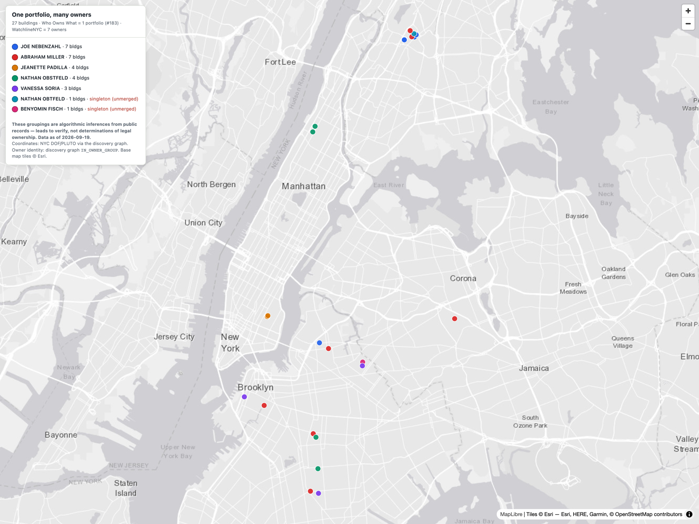
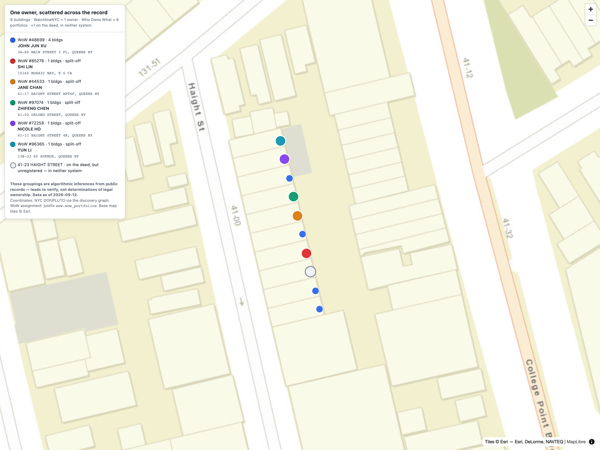

①Precision ≈ 1.0 — 0 cross-surname
merges on a 105-record gold set → Croman's 107 LLC names resolve to one owner resolver quality
②Divergence — not accuracy — on
the 39,456 buildings both systems group, they differ both ways: ~780 of our owner-groups unify
what WoW splits · ~620 WoW portfolios split across ours scale of the
difference
③The honest gap — which differences are
improvements? A blind head-to-head on ~530 pairs is built, not yet runthe
ask →
No "beats WoW" claim: precision is measured; the head-to-head is not. Reproduce ②:
compare_kg --divergenceCredibility anchor #2
Not every "portfolio" is ownership
Shared-address linkage answers "who operates through this office" — not "who owns this"
Linking landlords by shared business address is powerful — often it's the
only thread through a shell operation. But it can't tell an owner's office from a
managing agent's.
138 different owners register from one office at 770 Lexington
Ave (453 buildings). Read "same office" as "same owner" and you fuse them into one empire that
doesn't exist.
Same trap: co-op & condo boards — many unit owners, no single
landlord.
The fix isn't to throw away the address signal — it's to stop
asking it two questions at once. → three layers
Source: raw HPD registrations, 770 Lexington Ave. Inherent to address-linkage — WoW uses the
signal deliberately and flags it on the site.The architecture
Three layers, not one
A single "portfolio" hides three different questions — so we ask them separately
The question
Layer
Signal
Reliability
Live scale
Who manages it?
management
self-disclosed HPD agent
mostly sourced
~28,500 managers · ~67,000 bldgs
What network does it run through?
operational nexus
shared office / agent / shell (WoW's strength)
inferred
~15,800 multi-building nexuses
Who actually owns it?
owner identity
precision-first record linkage
inferred
~6,500 owner-groups
770 Lexington's 138 owners share an operational nexus
— real and useful. They are not one owner. Separate layers keep the signal without
the false empire.
Owner-identity is inferred (Type II); its accuracy vs. WoW is not yet adjudicated → the blind
eval (slide 11).The architecture — in practice
The three layers on one cluster
One manager, five buildings, three owners — the identity layer abstains
Every edge verified against the live graph · ownership / control are inferred (Type II) — leads, not verdicts.Setting up the demo
Conversational — by design, not free-form
The agent orchestrates queries; it doesn't reason about people
Four guarantees, enforced in code — not asked of the model:
Asks the graph, doesn't answer from itself — plain English → parameterized,
read-only queries. Writes/admin refused, even for the deep tier.
Reports only what a query returned — no free-form claims; every inferred element carries
its caveat, automatically.
"Who owns this?" returns both — recorded owner and apparent controller, labeled
— and flags disagreement.
Capability is gated structurally — deep investigation only for vetted users;
persona sets tone, never access; fail-closed.
The answer to the thesis: you can't manufacture false certainty about
a person if you only ever report what a sourced, labeled query returned.
Gating lives in the tool-visibility layer, not a prompt — because the records themselves (raw
violation text, ACRIS JSON) are a prompt-injection surface.Live demo · pinned to a public landlord
Ask it about Steven Croman
Watch it label every layer — sourced vs inferred — and refuse to overclaim
① "Who owns 17 Gay Street?" → slides 5·6·8
Three labeled layers, one answer: 17 GAY LLC (sourced) · Steven Croman (inferred)
· unified owner — 12 fragments, 127 buildings (inferred, a lead not title).
② "And who manages it — same as who owns it?" → slides 7·8
Centennial Properties NY (114 buildings) — "a manager is not an owner." Management ≠
ownership.
③ "So can I report he legally owns all 127?" → slides 3·9
It declines — "not a legal determination… only a title search or court finding could
support that." Leads, not verdicts.
If projection fails: pre-recorded capture + screenshots as backup. Data: BBL 1005930008 →
owner group OG-105462 (12→127) · manager Centennial (114).The payoff · mapped
Croman — 127 buildings, one owner
WatchlineNYC unifies all 127
into one owner. Who Owns What splits 9 of them off into 5 fragments on address
typos — 4 WEST 51 vs 424 WEST 51. That one-character typo is the
whole shell game, in a legend.
WatchlineNYC owner group OG-105462 · dots colored by Who Owns What portfolio · the
live map toggles between the two. See specs/case-escobar.md for the same story on one block.The close
Leads, not verdicts — and what's next
Inference to point an investigator at a question — never a determination about a person
Honestly not done yet
The blind accuracy eval is built, not run — ~530 pairs need adjudication.
Validated for precision, not yet recall / who's-right-vs-WoW.
A sabbatical prototype, not a shared service.
What I'm asking this room
Help run the blind eval — ground-truth data, adjudication time, or methodology.
Some of this may belong upstream in Who Owns What.
Feedback on the three-layer model.
Thank you —
and I'd love to talk. (Q&A)
Backup · divergence runs both ways
One WoW portfolio → seven owners Abraham Miller

Who Owns What calls these 27
buildings one owner; they're ~10 owners sharing one Lakewood office (not a
registered agent). WatchlineNYC resolves 7 — fixing typos, honestly missing one
(OBTFELD). The answer to "doesn't it just merge everything?" — here it does the
opposite.
WoW portfolio #183 · colored by WatchlineNYC IN_OWNER_GROUP · false glue:
235 River Ave, Lakewood NJ. See specs/case-miller.md.Backup · why exact-key matching fragments one owner
One office, a dozen keys Ramon Escobar · 2432 Grand Concourse #504
Every string below is the same Bronx office as filed in HPD. Who Owns What
links landlords only on an exact match — same street and same ZIP — so each variant is
its own node, splitting the portfolio.
2432 GRAND CONCOURSE 504
2432 GRAND CONCOURS 504
2432 GRAND COURSE 504
2432 GRAND COCNOURSE 504
2432 GRAND CONCOURSE
105 SHERMAN AVE
(blank)
+ 4 city spellings · 3 ZIPs
The real killer isn't the typo. WoW demands an
exact ZIP on every link, and two of these buildings standardized to a blank ZIP — so
even the perfectly-spelled GRAND CONCOURSE is exiled. WoW splits 24 + 2; Watchline reunites
all 26 — keying on resolved identity and the name-free deed, never the raw string.
Source: raw HPD + WoW wow_landlords. Miller was WoW over-merging on a
shared office; this is the opposite — WoW under-merging on brittle exact-key matching.Backup · the same split, in the graph
The edges that merge what WoW splits
The blank-ZIP nodes can't reach the 10458 node under WoW's exact-key rules; the Splink / registered-LLC / deed edges do. Same case as the previous slide — as a graph.Backup · the question WoW can't answer
One block, six owners — one deed 41 Haight St, Queens
Ask the agent:“Show me a block Who Owns What reads as six separate owners that's really one bulk purchase.”

Six colors, one row → one owner
Who Owns What paints one contiguous row of identical townhouses in six colors: Chan · Xu · Ho · Lin · Li · Chen — six head officers, nine owner-LLCs, nothing shared.
One deed, 2020 — a Chapter 11 trustee sold all 10 townhouses for $18.6M to a single buyer, who then re-deeded them into single-purpose shells.
Watchline reunites 9 of the 10 into one owner group (CONNECTED_BY_DEED). The 10th (41-23) is unregistered → in neither system (the ghost dot).
Here WoW isn't wrong — it's blind: the only tie is a transaction, and it reads no deeds. Common ownership is inferred from the deed record — a lead to verify, not a determination.
Owner group OG-51705 · deed 2020092500293001 ($18.6M · 10 parcels · Ch. 11 sale) · composition deed_only · 9 of 10 reunited. See specs/case-haight.md.Backup · likely pushback
Two fair questions
"We live in SQL — what does the graph add?"
Concede: most of the pipeline is SQL — WoW is Postgres, the linkage is DuckDB.
The graph earns its place for the transitive, multi-relationship parts: connected-component owner identity · N-hop "who connects to whom" across owner/manager/deed layers · graph analytics.
"Count violations per owner" → SQL. "Everyone within 3 hops across four link types, ranked by centrality" → graph.
"We don't trust AI."
Good — neither do I, for claims about people.
The real inference is transparent statistical linkage (measured precision), not a neural net.
The language model is a read-only front door — it makes no claims; the public record does. Ignore it and read the sourced records.
Its main job is to not falsely connect people.
Both answers share one core: the substance is the public record + a transparent, measured linkage step. The graph and the LLM are tooling around it — each earning its place, everything labeled sourced vs. inferred.